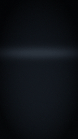

DreamLayer
A memory layer for the real world. Your glasses see what you see. DreamLayer remembers it, understands it, checks it, and hands it back the instant you need it — privately, on hardware you own.
DreamLayer is an intelligence layer for capable smart glasses. Today it targets the Brilliant Labs Halo — a lightweight heads-up display with a camera, microphone, IMU, and an on-glass Lua runtime — but the architecture is deliberately device-agnostic: the glasses draw and sense, and everything intelligent happens on your phone, your Mac, and (only if you switch it on) the cloud.

Above: the master feature reel. Every card in it is drawn by DreamLayer's actual renderer — nothing in this book is a mockup.
What it feels like
- You put the glasses on in the morning. Your brief is already floating there: what is coming, what you missed, what you owe.
- Someone across the table says "the deal closed at three million." A quiet card notes: earlier they said two. That is Veritas, the live fact-checker — and it is deliberately conservative, cooldown-limited, and honest about what it could not verify.
- A colleague asks the room "what was our Q3 number again?" — the answer is already on your glass before you open your mouth. Silently. No earcon, by design.
- You glance at someone you have met. Their name, your history, the last thing they said to you. Only people you introduced — DreamLayer will never identify a stranger.
- "Hey Oracle, where did I leave the bike?" — north rack, 4th and Alder.
- One long press and the glasses go fully deaf and blind. Nothing seen, heard, or kept, until you lift the veil.
What this book is
This is the complete reference for the DreamLayer ecosystem — every card, every command, every setting, every endpoint, every animation constant — written from the code, not from memory. Where a number appears (a cooldown, a threshold, a spring damping ratio), it is the number in the source.
Three honesty rules hold throughout:
- Everything shown is real. Every image and animation in this book was generated by the repository's own tooling: the HUD golden renderer, the device Lua raster harness, the demo compositor, and headless screenshots of the actual Brain control panel and phone app.
- Implemented, seam, or pre-hardware — always labeled. DreamLayer is a pre-hardware build: the full intelligence stack is written and tested (1,368 passing tests at the time of writing), but the places where a real microphone, camera, radio, or macOS reader plugs in are explicit, documented seams. When this book says Seam, it means: the logic on both sides is built and tested; the physical signal is what a device build supplies. The Hardware and seams chapter has the full matrix.
- Accuracy over hype. DreamLayer's flagship feature is a fact-checker. This book holds itself to the same standard.
The shape of the system
Four runtimes, one product:
| Runtime | Where it lives | What it does |
|---|---|---|
| Halo firmware | halo-lua/ (Lua, on the glasses) |
The HUD: 23 card renderers, the Horizon day-ring, gestures, BLE |
| Orchestrator (the hub) | host-python/src/dreamlayer/orchestrator/ |
The mind: Oracle, Veritas, memory, anticipation, attention, privacy |
| Mac mini Brain | host-python/src/dreamlayer/ai_brain/server/ |
The knowledge node: your files and mail indexed, Ollama, the control panel |
| Phone app | phone-app/ (Expo / React Native) |
The remote: pairing, the three brain switches, every toggle |
Intelligence lives at the lowest tier that can do the job. The phone answers instantly and offline; a Mac mini on your LAN answers from your files with a bigger model; the cloud is a switch you own — opt-in, counted, and logged on every single call.
Where to start
- New to the product: Ecosystem architecture, then The glasses experience.
- Want the full card gallery: HUD cards.
- Care about the fact-checking stack: Truth and discernment.
- Setting it up: The desktop Brain app and The phone app.
- Building on it: For builders and the Reference chapters.